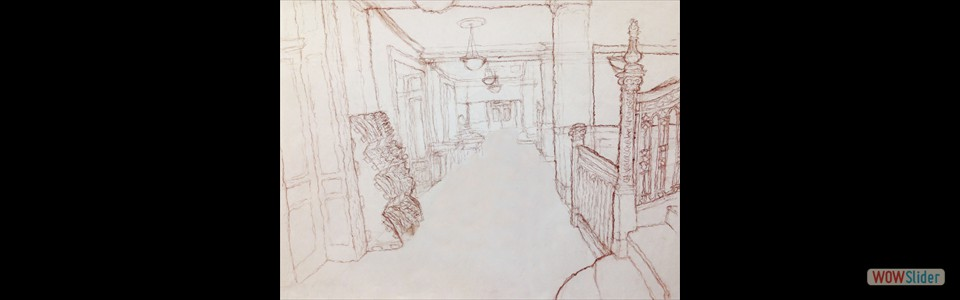

Drawn on August 30,2016
Drawn on August 30,2016 Drawn on August 30, 2016
Drawn on August 30, 2016 Drawn on August 30, 2016
Drawn on August 30, 2016 Drawn on August 30, 2016
Drawn on August 30, 2016- Drawn in Pencil; October 3, 2016
 Drawn in Pencil; October 3, 2016
Drawn in Pencil; October 3, 2016 Drawn in Pencil; October 3, 2016
Drawn in Pencil; October 3, 2016- Drawn in Pencil; October 3, 2016
 Drawn on October 7, 2016
College of Fine Arts, CMU
Drawn on October 7, 2016
College of Fine Arts, CMU- Drawn on October 7, 2016 College of Fine Arts, CMU
 Drawn on October 7, 2016
College of Fine Arts, CMU
Drawn on October 7, 2016
College of Fine Arts, CMU Drawn in Pencil; October 10, 2016
Drawn in Pencil; October 10, 2016 Drawn in Charcoal; October 17, 2016
Drawn in Charcoal; October 17, 2016- Drawn on September 2, 2016 Margaret Morrison Carnegie Hall, CMU
 Drawn on September 2, 2016
College of Fine Arts, CMU
Drawn on September 2, 2016
College of Fine Arts, CMU - Drawn on September 6, 2016
 Drawn on September 6, 2016
Drawn on September 6, 2016
 Drawn on September 6, 2016
Drawn on September 6, 2016
 Drawn on September 9, 2016
Drawn on September 9, 2016
 Drawn on September 9, 2016
Gates Hillman Center, CMU
Drawn on September 9, 2016
Gates Hillman Center, CMU- Drawn on September 10, 2016 College of Fine Arts, CMU
- Drawn on September 10, 2016 Margaret Morrison Carnegie Hall, CMU
 Drawn in conti, September 12, 2016
Drawn in conti, September 12, 2016 Drawn on September 16, 2016
Carnegie Museum of Natural History
Drawn on September 16, 2016
Carnegie Museum of Natural History Drawn in pencil; September, 18, 2016
Drawn in pencil; September, 18, 2016 Drawn in pencil; September 25, 2016
Drawn in pencil; September 25, 2016 Drawn in pencil; September 25, 2016
Drawn in pencil; September 25, 2016 September 5, 2016
Outside Margaret Morrison Carnegei Hall, CMU
September 5, 2016
Outside Margaret Morrison Carnegei Hall, CMU September 5, 2016
Point Breeze, Pittsburgh
September 5, 2016
Point Breeze, Pittsburgh September 5, 2016
Outside Gates Hillman Center, CMU
September 5, 2016
Outside Gates Hillman Center, CMU September 5, 2016
Hamerschlag House, CMU
September 5, 2016
Hamerschlag House, CMU- September 5, 2016 Margaret Morrison Carnegei Hall, CMU
 1
1 2
2 3
3 4
4 7
7 9
9 10
10 11
11 13
13 15
15 16
16 18
18 20
20 24
24 25
25 27
27 28
28 30
30 31
31 32
32bootstrap slider by WOWSlider.com v8.7